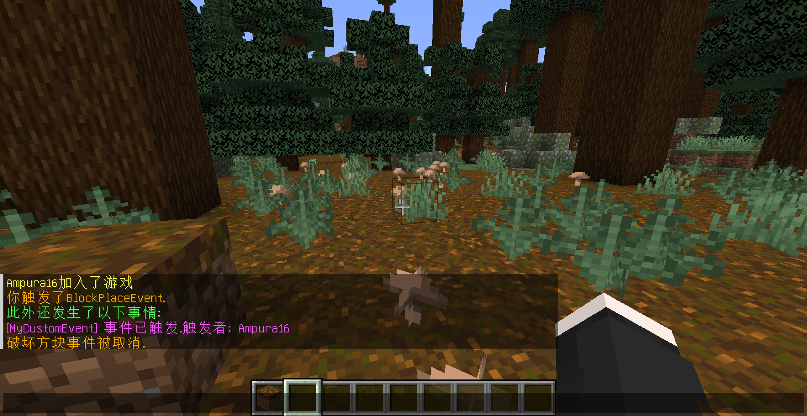
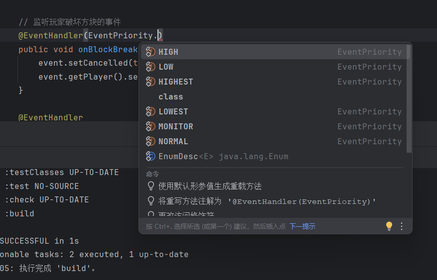

MET学长
萌新玩家 ★★☆☆☆初来乍到而又勤奋好学的萌新玩家
理解 Bukkit Event 事件系统的运作逻辑
MET学长今天非常高兴，他买了一个装配了顶级配置的新的服务器。他打开Minecraft登录了某生存服务器。他在游玩的时候很快发现一个问题：为什么在这个服务器中我的客户端显示了Bossbar，显示了计分板，这些在原版MC的世界里几乎是不存在的，甚至大家的聊天信息都有各种炫酷的RGB渐变特效，他决定tpa到他的朋友那里，过去之后不小心掉进了朋友领地（Residence）中的一个2格深的坑，他凭借他的单人游戏生存经验，正试图随手搭一个方块或者挖掉一个泥土逃离此处，却又发现服务器不允许他搭建或者破坏方块。于是他决定晚上深入研究一下这一切究竟是怎么做到的，为什么原版MC没有这种功能。
服务器只要开机，就算没有玩家，服务器本身也要处理基本的昼夜交替，时间变化，生物方块交互等基本事件。而有了玩家之后，抽象类 PlayerEvent 下管理的一系列玩家事件又要发挥更主要的作用，例如 PlayerLoginEvent、PlayerQuitEvent、PlayerInteractEvent 等等，这些事件都是BukkitAPI为有关的具体插件提供的API方法，而不是硬猜NMS或者修改服务器核心逻辑实现的。
在一个原版游戏中，Vanilla服务器并不会管任何东西，他只负责玩家正常的连接，提供一个游戏的平台。但是BukkitAPI提供了事件与监听器方法，允许服务器在收到玩家数据包之后进行自定修改之后返回插件希望的效果。所以出现了类似玩家试图挖掉方块（BlockBreakEvent）或者放置方块（BlockPlaceEvent）但是被监听器（Listener）发现的情况。在Bukkit中任何一个游戏事件都可以被监听器监听，而只要事件被监听，Bukkit就可以根据该事件是否继承 Cancelable 接口来决定有关事件取消的相关逻辑，其中最典型的方法就是通过实现 @EventHandler 接口获取该事件的 isCanceled() 和 setCanceled(boolean) 方法。
具体示例：阻止方块破坏
package top.brmc.bukkitplatform.practiceplugin;
import org.bukkit.ChatColor;
import org.bukkit.event.EventHandler;
import org.bukkit.event.Listener;
import org.bukkit.event.block.BlockBreakEvent;
import org.bukkit.plugin.java.JavaPlugin;
import org.jspecify.annotations.NonNull;
public final class PMain extends JavaPlugin implements Listener {
@Override
public void onEnable() {
getServer().getPluginManager().registerEvents(this, this);
}
@Override
public void onDisable() {
// Plugin shutdown logic
}
// 监听玩家破坏方块的事件
@EventHandler
public void onBlockBreak(@NonNull BlockBreakEvent event) {
event.setCancelled(true); // 取消破坏行为
event.getPlayer().sendMessage(ChatColor.GOLD + "破坏方块事件被取消.");
}
}
要点说明
- 插件主类
PMain按照Bukkit规范继承JavaPlugin类 - 监听事件需要实现
Listener接口 @EventHandler注解标记事件处理方法，参数即为要监听的事件类型- 调用
setCancelled(true)还原方块状态并向玩家发送提示信息
自定义事件
明白了Bukkit事件原生实现逻辑之后，又有一个问题摆在眼前，对于一些大型插件，其复杂的玩法和逻辑肯定不是多套几个Bukkit事件就能实现的，一定有作者自己设计的自定义事件和方法，那又是如何实现的呢？这就要涉及到事件系统的重要逻辑：自定义事件。
主类部分
public final class PMain extends JavaPlugin implements Listener {
@Override
public void onEnable() {
getServer().getPluginManager().registerEvents(this, this);
}
@Override
public void onDisable() {}
@EventHandler
public void onBlockBreak(@NonNull BlockBreakEvent event) {
event.setCancelled(true);
event.getPlayer().sendMessage(ChatColor.GOLD + "破坏方块事件被取消.");
}
@EventHandler
public void onBlockPlace(@NonNull BlockPlaceEvent bpe) {
bpe.getPlayer().sendMessage(ChatColor.GOLD + "你触发了BlockPlaceEvent.");
bpe.getPlayer().sendMessage(ChatColor.GREEN + "此外还发生了以下事情:");
MyCustomEvent mce = new MyCustomEvent(bpe.getPlayer());
mce.notifyPlayer();
}
}事件类部分
public class MyCustomEvent extends Event {
private static final HandlerList handlers = new HandlerList();
private final Player player; // 用来存储触发事件的玩家
public MyCustomEvent(Player player) {
this.player = player;
}
public Player getPlayer() { return player; }
@Override
public @NonNull HandlerList getHandlers() { return handlers; }
public static HandlerList getHandlerList() { return handlers; }
// 事件触发时输出触发者信息
public void notifyPlayer() {
Player p = getPlayer();
if (p != null) {
String playerName = p.getName();
p.sendMessage(ChatColor.LIGHT_PURPLE + "[MyCustomEvent] 事件已触发.触发者: " + playerName);
}
}
}运行效果

"等等等等...为什么突然写了这么多东西呢？" MET学长表示困惑。他复习了Java基础知识，结合BukkitAPI Javadoc发现原因在于：
- BukkitAPI在自定义事件部分强制要求实现如下两个方法：
必须实现
public HandlerList getHandlers() { return handlers; } public static HandlerList getHandlerList() { return handlers; } - 自定义事件注册后要想应用到服务器也必须实现
Listener接口，但由于本插件是在主类注册监听，在onEnable()中已经自动实现所有主类中的监听器。 - 有关
Player玩家实现只是方便调用自定义事件的便携方式，不影响对自定义事件本身的理解。 - 调用自定义事件的方式如下：
调用示例
MyCustomEvent mce = new MyCustomEvent(/* 具体调用方式 */); - 各游戏事件相互独立，互不干扰。
事件优先级
MET学长在查阅资料的时候发现大多事件都是可撤销或者监听撤销情况的，所以他特别留意了一下关于事件优先级的实现逻辑，发现因为一个事情可能被多个监听器监听，而服务器在处理事件时会"询问"每一个插件的"意见"，各插件通过设定优先级和是否忽略或影响取消判定的方式决定本插件处理该事件的方式。

虽然事件在被排队监听的过程中不会中途消失，但是高优先级的监听器会优先监听，并且可以通过 Canceled 接口有关方法更改后排队的监听器收到该事件的取消状态，以此影响后续监听器的具体行为。
"a...原来是这样！" MET学长恍然大悟，他终于明白了 Bukkit Event 如何搭配 Listener 监听器实现对原版行为的监听和修改。随后查阅了更多资料，发现了Spigot官网有对各种事件的详细介绍：
"原来在Bukkit中有这么多的事件呢，涉及了实体行为、配置文件、世界设定、附魔、天气等各种方面！" MET学长感叹道。
"喂？上午你怎么TP过来就掉坑里了呀，也不说一声就下线了，干什么去了呀，快来看看我的领地，新建了好多东西呢！"
点击展开查看思考问题 =w=
- 1 如何编写插件实现玩家加入游戏发送自定义欢迎信息？
- 2 如何调用自定义事件同时触发数个原生Bukkit事件？例如玩家击杀牛后把玩家TP到5格高的地方，但是取消摔落伤害并且播放自定义音效，随后在玩家位置生成一只猪（当然你也可以通过顺序执行代码块的方式实现）。
-
3
进阶：除了直接操作玩家事件（如玩家攻击、玩家方块交互）
getPlayer()的方式，你能想到其他触发事件的方法吗？